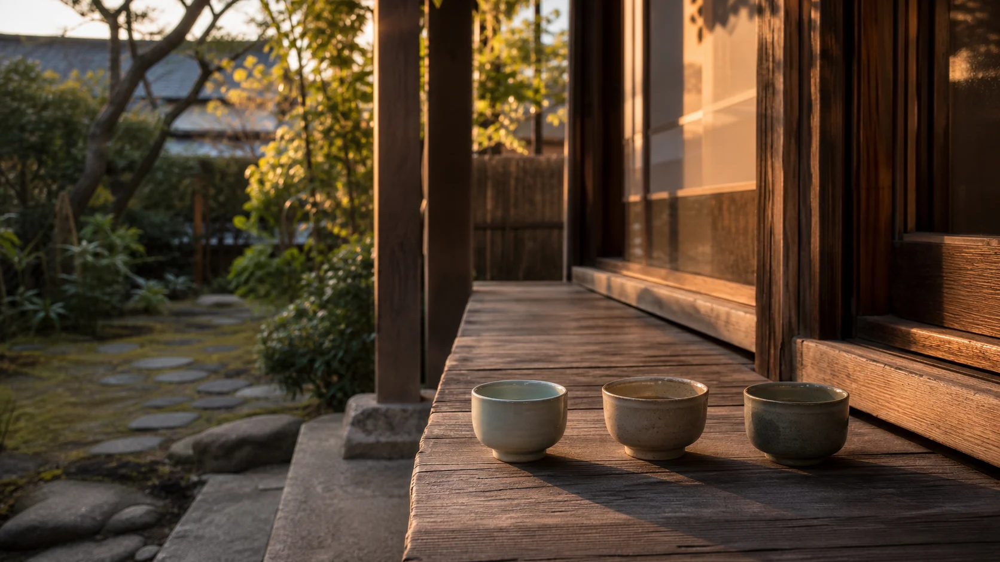
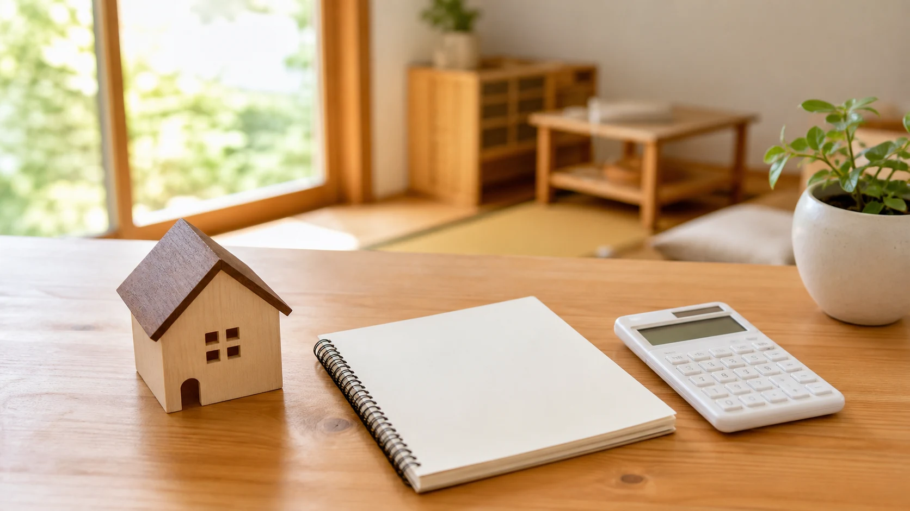
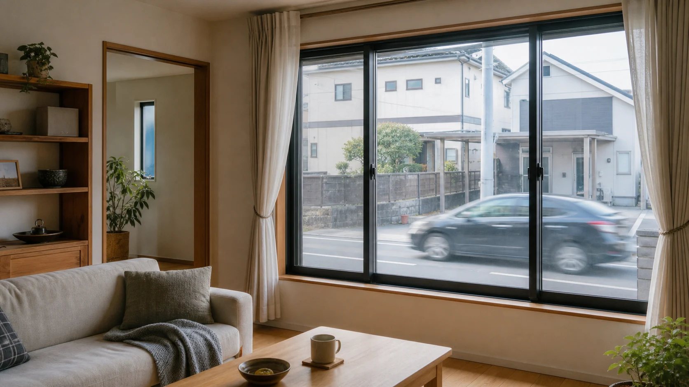
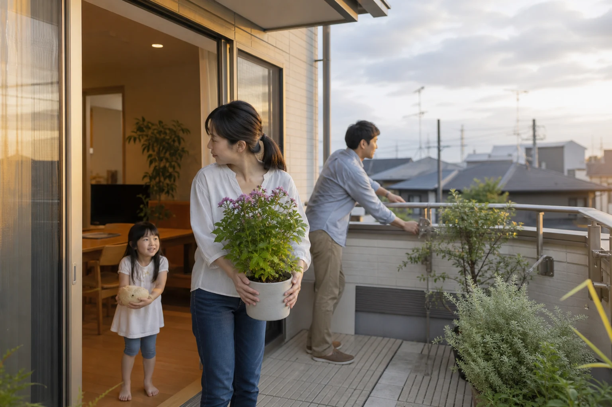
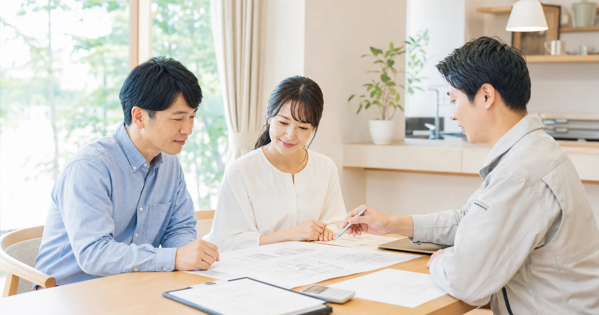
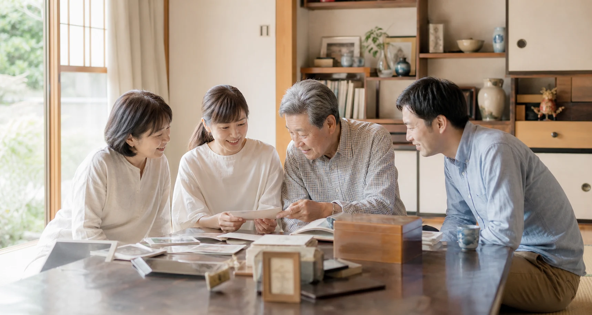
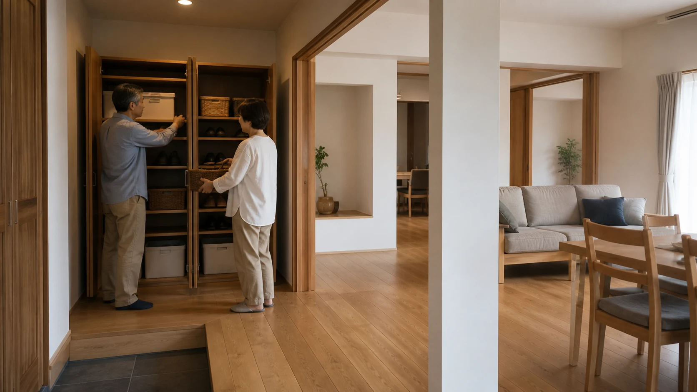
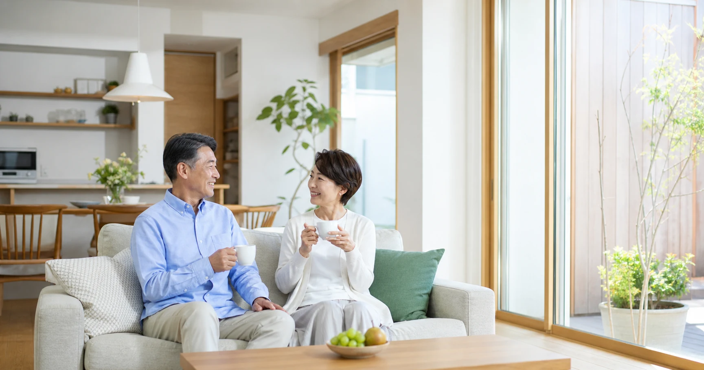

COLUMN SERIES
家は「建てる・住む」だけでなく、「畳む」時も来ます。住まいの価値観から、片づけ、家族構成の変化、実家じまい、防災まで――実家の工務店・不動産に10年従事し、いまは教育の現場にも立つ筆者エイスケが、暮らす人の目線でお届けします。
最新の回
公開日：2026年10月20日
発達特性のある子どもが安心できる「安心ゾーン」を家につくる考え方を紹介。音・光・物の整え方と、家族で支える視点を解説します。
公開日：2026年10月15日
家族が集まる場所は、子育て期・思春期・独立後で変わります。リビングに限らない「つながり方」の変化と、既存の家の使い直し方を考えます。
公開日：2026年10月13日
2016年の熊本地震後に6避難所101人を対象とした調査では、不便に思ったことの最多がトイレでした。携帯トイレの備蓄量の目安と、今日からできる備え方を解説します。
公開日：2026年10月8日
家族の困りごと、間取り・家具配置、設備・見積もりの質問、家族会議の論点を、生成AIへ何と入力し何を得るかまで具体的に紹介します。

公開日：2026年10月6日
実家じまいは「空っぽにする」ことではありません。家・物・思い出をどう引き継ぐか、住み継ぐ・賃貸・民泊・売却の選択肢を整理します。

公開日：2026年10月1日
家庭裁判所で扱われた遺産分割事件には、遺産価額5,000万円以下の事案も含まれます。持ち家の引き継ぎを元気なうちに考える基本を整理します。

公開日：2026年9月29日
家の音を負担に感じるとき、発生源や伝わる経路を整理することが対策の入口になります。減らしたい音と残したい気配を分けて考えます。
公開日：2026年9月24日
円安は住まいの建築費・リフォーム費・光熱費にどう影響するのか。木材の輸入依存という構造から、慌てず備える方法を解説します。
公開日：2026年9月22日
住宅ローンの変動金利1％の差を試算し、5年ルール・125％ルールの有無を含めて契約条件を確認するポイントを解説します。
公開日：2026年9月17日
身近なお金のテーマとなっているNISA口座と住宅ローン・修繕費との優先順位を考えます。
公開日：2026年9月15日
子どもの独立後、夫婦の暮らしに家をどう合わせるか。寝室を分ける選択肢や、それぞれの居場所と共用空間の両立の考え方を紹介します。

公開日：2026年9月10日
家の外・中・避難を分け、台風の前に家族で備えます。
公開日：2026年9月8日
電気代の背景と、窓・家電から始める現実的な節電を考えます。

公開日：2026年9月3日
見積もりの内訳を読み、信頼できる事業者を選ぶ基本です。
公開日：2026年9月1日
年間の断熱・気密と夏の日射対策を組み合わせます。
公開日：2026年8月27日
建物と管理の両面から、マンションに長く暮らす条件を確かめます。

公開日：2026年8月25日
実家のこれからを、親が元気なうちに家族で話し始めます。
公開日：2026年8月20日
家族の気配が通う間取りと、子どもの育ちを支える住まいを考えます。

公開日：2026年8月18日
収納量だけでなく、使う場所と戻す動線から片づく仕組みを考えます。

公開日：2026年8月10日
「よりよい住まいを」本当に価値ある家とは。連載の総論です。